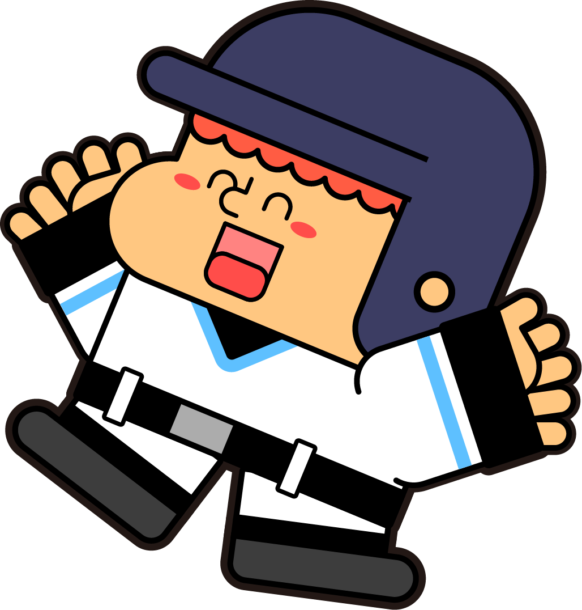
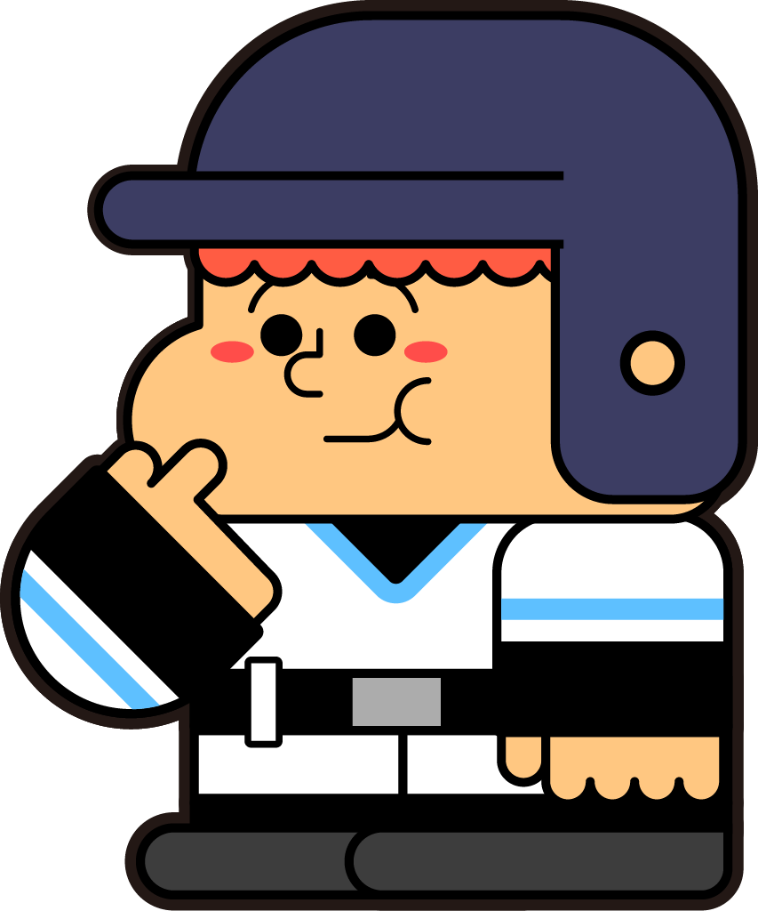
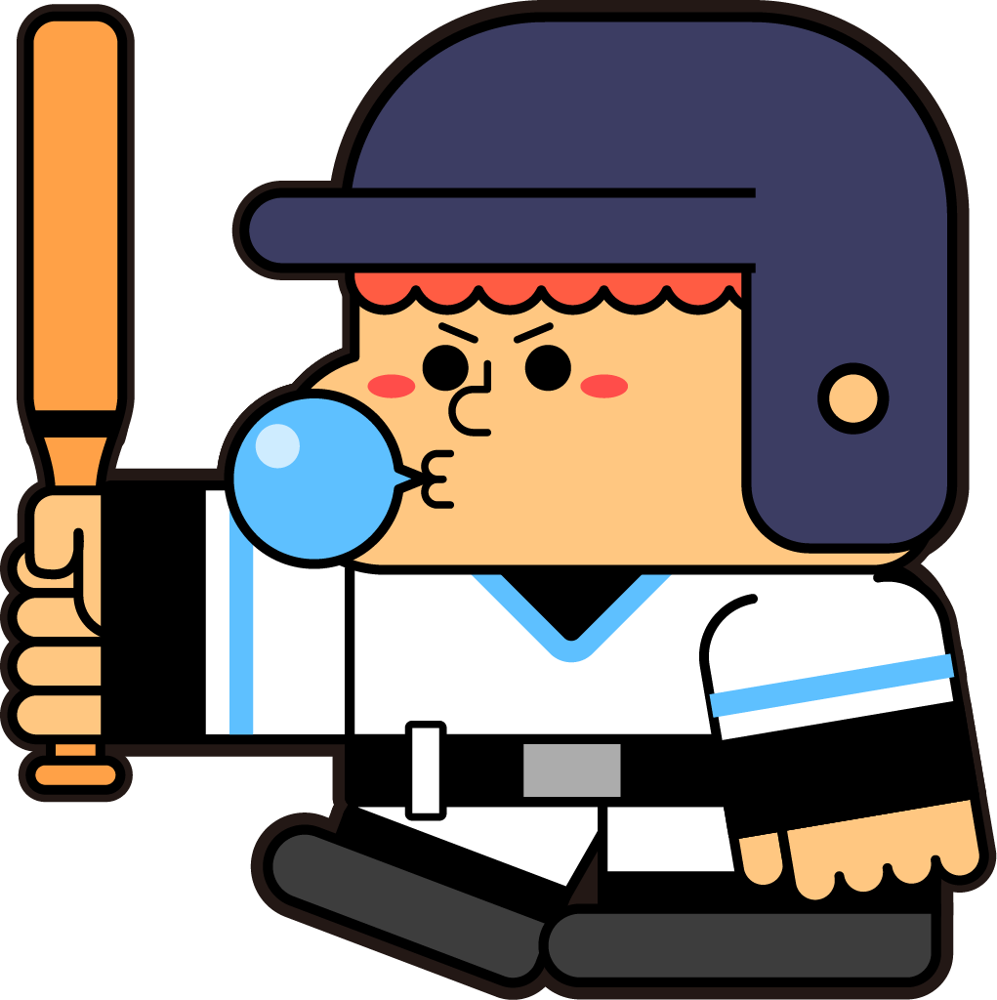
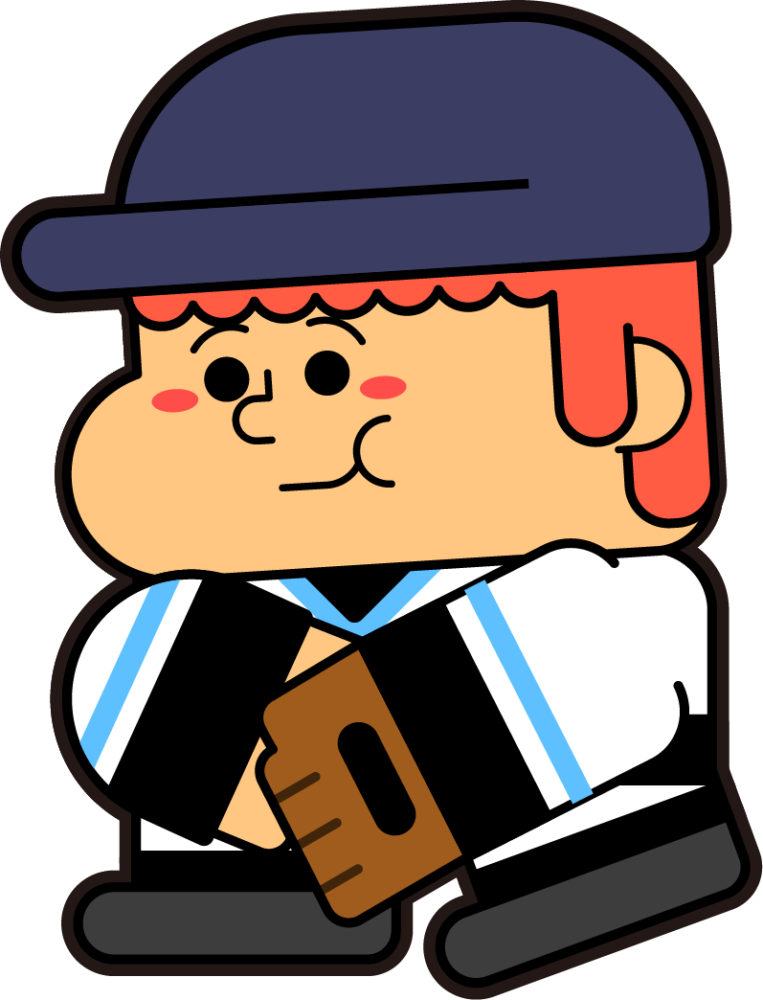
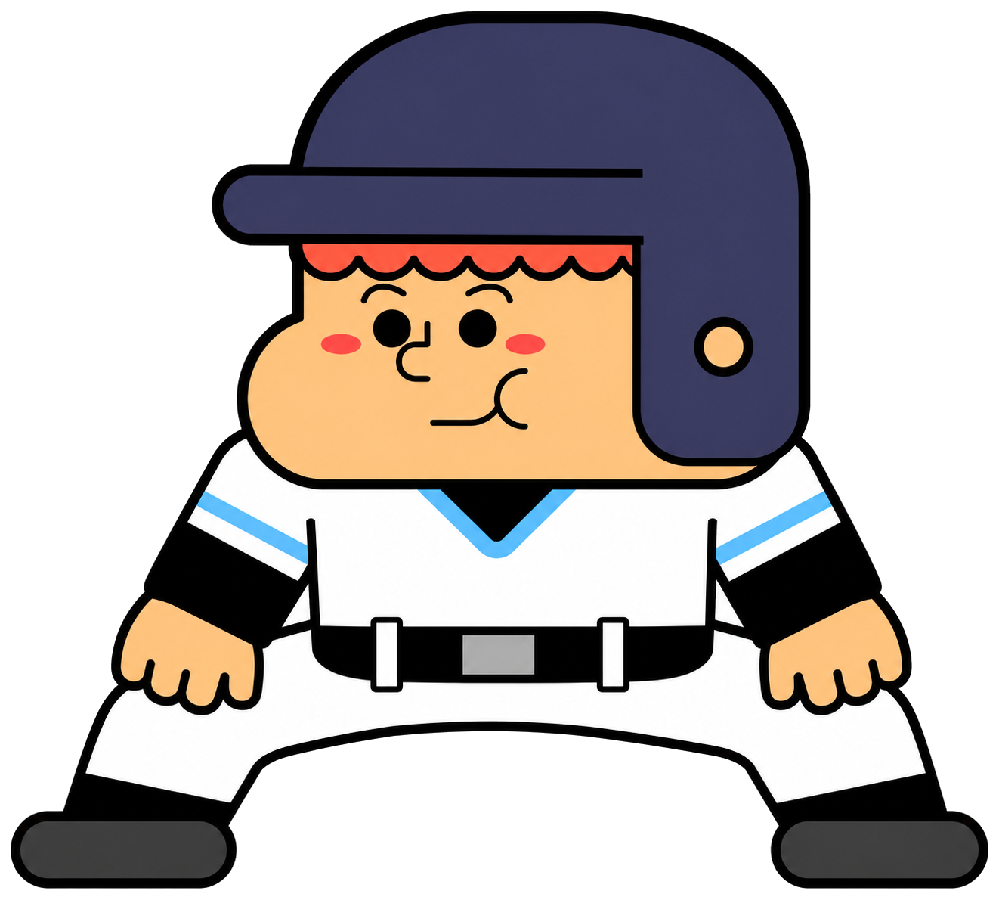
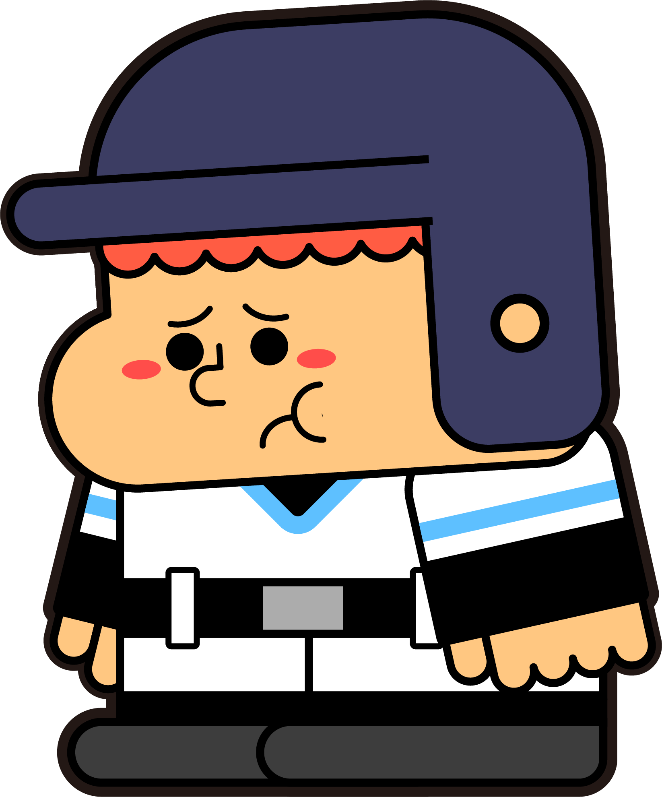

メジャーリーグ野球用語
英和・和英辞典 ＆ 学習プレイ
0
日
連続ログイン
ルーキー
称号（得点
0
）
🇯🇵 今日の日本人選手
👀 タップして成績を表示
ネタバレ注意（各選手の個人成績が表示されます）
読み込み中…
📖 今日の一語
—
💡 今日の豆知識
—
📅 この日のMLB史
—
⚾ 今日の試合
🔄 約5分ごとに更新
順位表 →
読み込み中…
米国日付の本日の試合／開始時刻は日本時間／結果は「結果」をタップで表示（ネタバレ防止）
← ホーム
順位表
読み込み中…

メジャーリーグ野球用語英和・和英辞典
✕
略語
英和 (EN→JA)
和英 (JA→EN)
← 辞書に戻る
お気に入り
← 辞書
統計略語辞典
✕
あそぶ・まなぶ
正解数
英和
0 / 2491
--%
和英
0 / 1111
--%
⚾ 本日
0
点 ／ 累計
0
点
🏆 成績・ランキング
▼
—
0
本日の得点
0
累計得点
0-0
対戦成績
0
連続ログイン
称号：
ルーキー
本日の得点で順位が決まります（毎日リセット）
⚾ 点の入り方
▼
スイング操作
手動
正解すると打席へ。バーの
赤
で止めると長打！（
黄
＝単打）
往路
＝ホームラン／
復路
＝二塁打（難問は三塁打）／それ以降＝単打
走者が
ホームインで得点
。不正解や凡打はアウト、
3アウトで終了
。
正解すると
自動で単打
（タイミング操作なし）。
長打・本塁打はねらえません
（狙うなら手動）。堅実だが天井は低め。
走者が
ホームインで得点
。不正解はアウト、
3アウトで終了
。
📅 今日の10問
毎日
10問
に挑戦（1日1回）。スイングはなく
正解／不正解のみ
。
10問全問正解＝＋5点
／
6〜9問正解＝＋3点
（本日・累計に加算）。
📚 学ぶ

フリーバッティング
英和・和英ミックス！自己ベストを伸ばそう

今日の10問
毎日コツコツ10問チャレンジ
復習
間違えた問題をおさらい
🔥 勝負
試合
9回勝負！勝てばボーナス
← 目次

OUT ○○○
本日
0
／通算
0
Lv1 直球
打て！
問題
—
次の問題 →
THREE OUT!

勝利！
あなた 0 - 0 相手
目次へ戻る
広告
広告スペース
実際の広告はアプリ版で表示されます
とじる（
5
）
広告を消す（プレミアム）
← 目次
今日の10問
⚾ 本日
0
／ 累計
0
今日の10問
毎日10問でコツコツ学ぼう
スタート ▶
0 / 10
問題
—
次の問題 →
0 / 10
問
今日の10問 完了！
明日またチャレンジしよう
← 前の月
次の月 →
←
→
← 目次
復習リスト
全削除
復習リストをすべて削除しますか？
いいえ
はい
設定
2491
英和エントリ数
1111
和英エントリ数
問題スコアをリセット
英和: 0正解 / 0問 和英: 0正解 / 0問
リセット
スコアをリセットしますか？
キャンセル
リセットする
問題
効果音
ヒットの「カキーン」などの野球効果音
オン
プレミアム
プレミアム（月額100円）
広告なし・回数無制限。
未登録（無料）
購入を復元
›
通知
デイリー通知
毎朝8時ごろ「今日の10問」をお知らせ（アプリ版のみ）
オフ
サポート
アプリを評価する
›
不具合を報告
›
プライバシーポリシー
›
利用規約
›
このアプリについて
バージョン
1.0.0
辞書データについて
本アプリの辞書データは、以下の書籍に基づいています。
大リーグ早わかり野球用語
英和・和英小辞典
阿部 達 編著／現代図書
2006年3月3日発行
原典は2006年発行のため、ルール改正は説明に（追記）として記載しております。新たなルールは追加しております。固有名詞など一部に古い情報が含まれます。
広告
バナー広告スペース（アプリ版で表示）
ホーム
辞書
問題
設定
✕
ようこそ！
はじめに教えてね（あとで変更可）
性別
男
女
無回答
年代
10代以下
20代
30代
40代
50代
60代以上
つぎへ →
ニックネームを選ぼう
気に入らなければ引き直してね
—
🔄 引き直す
これにする！